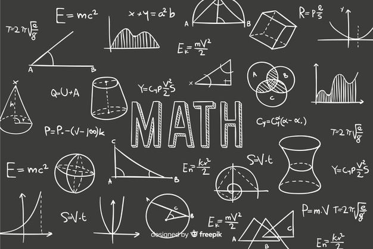
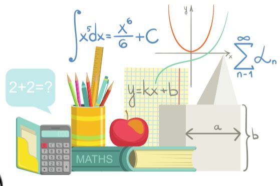

Landasan Matematika
Dibuat Oleh Kelompok 2

PERGI KE:
Apa Itu Landasan Matematika?Matematika ibarat sebuah bangunan bertingkat. Dia punya pondasi, rangka, lantai yang bertingkat, dan unsur-unsur lain yang melekat padanya. Secara struktural bangunan itu hanya dapat dipertanggungjawabkan keberadaannya sebagai bangunan apabila dibangun di atas pondasi atau landasan yang kuat. Dengan demikian, bangunan ini akan tetap kokoh dari masa ke masa meskipun diterpa badai dan taufan. Dalam matematika, landasan berfungsi untuk memperkokoh, menyokong atau menopang bangunan matematika. Selain itu landasan matematika juga sebagai sarana yang diperlukan untuk 'merenovasi' bangunan matematika itu sendiri. Dalam landasan matematika kita akan memfokuskan diri pada 2 unsur pokok, yaitu Logika Matematika (atau yang biasa disebut Symbolic Logic) dan Teori Himpunan (Set Theory).
Pada bab 1 ini akan membahas terkait metode penulisan himpunan, relasi, dan operasi pada himpunan dan perhitungan (counting) di himpunan. Silahkan menonton video dibawah ini untuk pengantar kalian.
Matematika merupakan pengetahuan yang deduktif-aksiomatik. Sebagai pengetahuan yang deduktif, kesimpulan yang dianggap benar harus melalui pembuktian yang deduktif. Dalam matematika, pembuktian secara induktif atau generalisasi adalah tidak valid atau tidak sah. Adalah tidak valid kita menyimpulkan "untuk semua bilangan real x, berlaku x2 ≥ 0" hanya dengan menunjukkan (-2)2 > 0, 02 = 0, 32 > 0. Bahkan kita perbanyak bilangan hingga seribu, dua ribu bahkan lebihpun tetap bukanlah penarikan kesimpulan yang valid. Mengapa tidak valid? Hal ini disebabkan banyaknya bilangan real adalah tak hingga dan oleh karena itu tidak bisa disebut satu demi satu. Bukankah kalimat "untuk semua bilangan real x, berlaku x2 ≥ 0 bernilai benar? Ya, memang benar, membuktikannya tidak cukup dengan hanya mendaftar beberapa bilangan real. Beberapa bilangan tersebut tidak cukup sebagai alat bukti untuk membuktikan benarnya pernyataan "untuk semua bilangan real x, berlaku x2 ≥ 0". Bagaimana membuktikannya? Jawabnya, kita gunakan peran matematika sebagai pengetahuan yang aksiomatik, yaitu menggunakan definisi, aksioma, dan teorema.
Matematika sebagai pengetahuan yang aksiomatik diawali dengan unsur yang tidak didefinisikan (undefined term) atau primitif (primitive), definisi, aksioma, dan teorema. Aksioma merupakan hal yang langsung diterima kebenarannya. Teorema merupakan hal yang harus dibuktikan kebenarannya secara deduktif.
Di dalam struktur matematika, istilah "himpunan" merupakan istilah atau unsur yang tidak didefinisikan (undefined term) atau primitif (primitive). Jika pada buku-buku sekolah, istilah "himpunan" didefinisikan sebagai kumpulan obyek-obyek yang didefinisikan dengan jelas, maka perlu diketahui bahwa definisi tersebut bukanlah definisi yang formal. Obyek-obyek tersebut dikenal sebagai anggota atau elemen atau unsur himpunan. Definisi pada buku sekolah tersebut dapat dipandang sebagai pengertian himpunan secara intuitif. Dengan pengertian intuitif tersebut. maka dapat diketahui sesuatu obyek merupakan anggota suatu himpunan ataukah tidak.
Penamaan himpunan seringkali dilambangkan dengan huruf kapital seperti A,B,P,Q,S,U dan sebagainya. Untuk menyatakan himpunan pada umumnya menggunakan notasi "kurung kurawal", yaitu { }. Misal, himpunan A merupakan himpunan bilangan asli yang kurang dari S dapat dituliskan dengan A = {1, 2, 3, 4}. Himpunan A tersebut juga bisa dinotasikan dengan A = {x | x merupakan bilangan asli yang kurang dari 5}. Pada dasarnya terdapat dua metode dalam menuliskan himpunan. Metode tersebut adalah:
1. METODE ROSTER
2. METODE RULE
Penulisan himpunan dengan cara mendaftar anggota-anggotanya disebut penulisan himpunan dengan menggunakan metode roster. Berikut ini adalah hal-hal yang yang perlu diperhatikan ketika menggunakan metode Roster
Metode Roster disebut juga dengan metode enumerasi atau mendaftar.
Metode Rule merupakan metode penulisan himpunan dengan menyebutkan aturan pembentuk himpunan atau syarat keanggotaan himpunan. Catatan di samping menunjukkan hal-hal yang perlu diperhatikan pada metode rule. Metode Rule seringkali dinamakan "metode notasi pembentuk himpunan". Penulisan himpunan A-(x| x merupakan bilangan asli yang kurang dari 5) merupakan contoh penulisan himpunan dengan metode Rule. Himpunan tersebut dapat juga dituliskan sebagai A = {x ∈ Nx < 5) dengan N adalah himpunan semua bilangan asli.
Catatan: Hal hal yang perlu diperhatikan pada metode rule antara lain: (1) Menggunakan kurung kurawal. (2) Menggunakan simbol pemisah antara notasi anggota himpunan dengan Barat keanggotaan himpunan
Himpunan bilangan khusus di sini terdiri dari himpunan semua bilangan real, himpunan semua bilangan rasional, himpunan semua bilangan bulat, himpunan semua bilangan cacah, dan himpunan semua bilangan asli. Himpunan-himpunan bilangan tersebut mempunyai notasi yang baku (standard) sebagai berikut.
Keanggotaan Himpunan
Untuk lebih memahami himpunan khusus bisa mengakses link ini!
| Notasi Himpunan | Notasi Interval |
|---|---|
| {x: a < x < b} | (a, b) |
| {x: a ≤ x ≤ b} | [a, b] |
| {x: a ≤ x < b} | [a, b) |
| {x: a < x ≤ b} | (a, b] |
| {x: x ≤ b} | (-∞, b] |
| {x: x < b} | (-∞, b) |
| {x: x ≥ a} | [a, ∞) |
| {x: x > a} | (a, ∞) |
| ℝ | (-∞, ∞) |
Himpunan semesta merupakan himpunan yang melingkupi semua obyek yang menjadi pembicaraan kita. Misalkan kita akan membicarakan bilangan asli, maka himpunan semestanya berupa himpunan semua bilangan asli. Kalau kita akan membahas bilangan real, maka himpunan semestanya adalah himpunan semua bilangan real. Notasi untuk himpunan semesta waktu di sekolah dulu adalah S yang diambil dari inisial Semesta. Di buku-buku tingkat lanjut, himpunan semesta dinotasikan sebagai U. Notasi U ini diambil dari inisial Universe.
Himpunan kosong merupakan himpunan yang tidak mempunyai anggota. Himpunan P = {x | x adalah bilangan rasional dan sekaligus tidak rasional} merupakan contoh himpunan kosong. Himpunan kosong bisa dinotasikan dengan { } atau bisa juga dengan 0. Himpunan kosong disebut juga himpunan nol (null set). Istilah himpunan nol sangat jarang digunakan, karena kalau disebutkan secara lisan bisa rancu dengan penyebutan himpunan yang beranggotakan nol saja, yaitu {0}.
Beberapa Relasi Antar Himpunan yang akan dibahas adalah:
Himpunan A dan himpunan B dikatakan sama jika semua anggota A dan B sama. Dengan kata lain, himpunan A dan himpunan B dikatakan sama jika dan hanya jika setiap anggota himpunan A merupakan anggota himpunan B dan jika setiap anggota himpunan A merupakan anggota himpunan A. Sebaliknya, jika tidak memenuhi kondisi di atas maka dikatakan himpunan A tidak sama dengan himpunan B dan dinotasikan dengan A ≠ B.
Himpunan A merupakan himpunan bagian dari himpunan B dinotasikan dengan A ⊆ B. Sedangkan notasi untuk himpunan A bukan himpunan bagian dari himpunan B adalah A ⊈ B. Dikenal juga istilah superset. Himpunan A merupakan superset dari himpunan B dinotasikan dengan A ⊇ B. Himpunan A dikatakan merupakan himpunan bagian (subset) dari himpunan B, yang ditulis A ⊆ B, jika dan hanya jika berlaku semua anggota himpunan A merupakan anggota himpunan B. Jika tidak memenuhi syarat itu, maka dikatakan himpunan A bukan merupakan himpunan bagian dari himpunan B, yang ditulis A ⊈ B. Himpunan A dikatakan superset dari himpunan B jika dan hanya jika himpunan B merupakan himpunan bagian dari himpunan A. Secara simbolik dapat ditulis sebagai A ⊇ B jika dan hanya jika B ⊆ A. Jika kita kaitkan dengan pengertian himpunan bagian, maka pengertian kesamaan dua himpunan dapat ditulis secara simbolik sebagai berikut.
A = B jika dan hanya jika A ⊆ B dan B ⊆ A
Secara simbolik pengertian himpunan A tidak sama dengan himpunan B dapat dituliskan sebagai berikut.
A ≠ B jika dan hanya jika A ⊈ B atau B ⊈ A
Ilustrasi pengertian kesamaan dua himpunan seperti ini dapat dilihat pada contoh di atas untuk himpunan R dan S.
Kita perhatikan lagi kesimpulan contoh 2 di atas, khususnya untuk P ⊈ Q dan Q ⊆ P, yang berarti P ≠ Q walaupun Q ⊆ P. Kondisi yang semacam ini dikatakan himpunan Q merupakan himpunan bagian sejati (proper subset) dari himpunan P. Sekarang kita perhatikan kondisi R ⊆ S dan S ⊆ R, yang berarti R = S. Untuk itu kita tidak boleh mengatakan bahwa R himpunan bagian sejati dari S, karena R = S. Notasi untuk himpunan bagian sejati adalah ⊂ atau ⊊. Notasi ⊊ jarang digunakan dan hati-hati notasi ⊊ berbeda dengan notasi ⊈.
Himpunan kuasa dari himpunan A adalah himpunan semua himpunan bagian dari himpunan A. Notasi untuk himpunan kuasa dari himpunan A adalah Ƥ(A).
1. Jika A = {0}, maka Ƥ(A) = {Ф, {0}},
2. Jika A = {Ф}, maka Ƥ (A) = {Ф,{Ф}}
3. Jika A = Ф, maka Ƥ (A) = {Ф}
Pada pembahasan tentang perhitungan yang terkait dengan himpunan akan dibuktikan bahwa berlaku teorema berikut.
Jika A sebarang himpunan di himpunan semesta U dan n(A) = n, maka n(Ƥ(A)) = 2n
1. Nyatakan himpunan-himpunan berikut dengan mengunakan Metode Rule. Jawaban bisa bervariasi
a. P = {1,3,5,7,9}
b. Q: himpunan bilangan cacah yang kurang dari 15
c. R: himpunan selesaian dari x2 ≥ 2
d. S: himpunan bilangan positif
e. T = (0, 4, 9, 16, 25,...)
2. Pada tiap-tiap pasangan himpunan yang ada di a hingga d, tentukan berlakunya relasi kesamaan, subset ataukah proper subset.
a. A = {Ф,0,2}, B = {Ф, {Ф}}, C = Ф, {Ф}, {0}, {2}{0,2}, }
b. A = {x ∈ ℤ||×| ≤ 3}, B = {-3, -2, -1,0,1,2,3}, C = {x ∈ ℕ ||×| < 4}
c. A = [-2,5], B = (-2,5), C = {-2,5}
3. Jika m, n ∈ ℤ, dan A adalah sebarang himpunan bilangan, maka didefinisikan mA + n = {ma + n | a ∈ A}
a. Tuliskan definisi 2ℤ dan tentukan 5 anggota 2ℤ.
b. Apakah himpunan semua bilangan genap sama dengan 2ℤ?
c. Apakah 2ℤ, = -2ℤ?
d. Tuliskan definisi 2ℤ + 1 dan tentukan 5 anggota 2ℤ + 1.
Jika sudah selesai mengerjakan silahkan kumpulkan dengan memfoto jawaban Anda dan upload di sini!